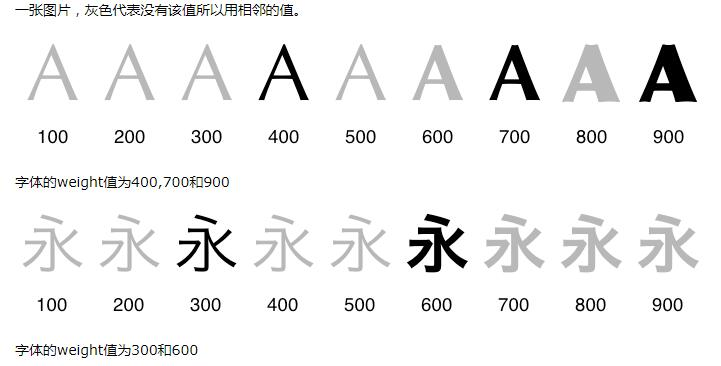
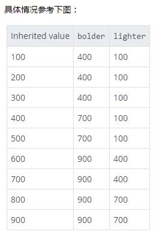

normal
bold
bolder
lighter
100
200
300
400相当于normal
500
600
700相当于bold
800
900
问题1：发现规律100——300字体大小一样，400——500字体大小一样，600——900大小一样
原因：给定的字体系列少于九个字体粗细基本在这种情况下使用一种预先定义的方式来填充缺失的空隙。
填补空隙的规律：
100|200|300中任一值缺失：和下一级较细的值相同。如果没有，则和下一级较粗的值相同
400的大小一般不会缺少，因为是normal大小，缺失了字体就没意义了
500缺失：和400相同
600|700|800|900任一值缺失：和下一级较粗的值相同。如果没有，则和下一级较细的值相同

一般网页中也就三种粗细度，不然突出不了内容
问题2：发现bold和bolder粗细没有区别
原因:见问题1，由于一般字体只有三种粗细度
bolder和lighter的粗细是相对于上级父元素的继承值而言的
bolder就是匹配字体集中可用的下一级较粗字体,bolder匹配下一级较细字体

font-weight:100
lighter,font-weight:100;不能再小了
bolder,font-weight:400
font-weight:400;normal大小
lighter,font-weight:100;
bolder,font-weight:700
font-weight:600,这里600的大小和700一样，是因为补差规则，见问题1